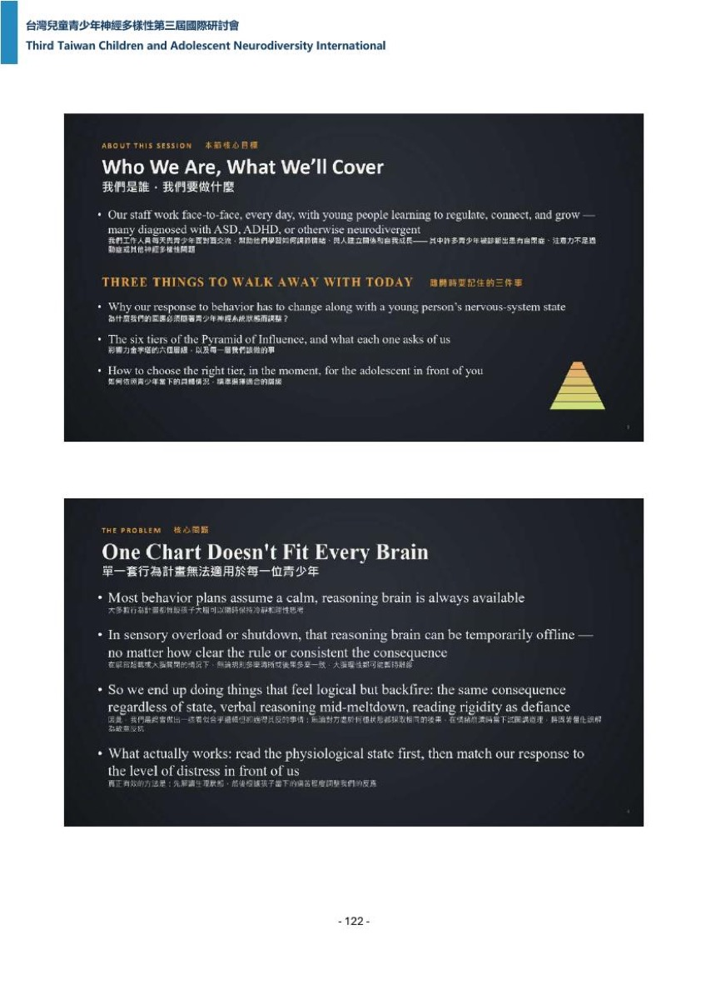
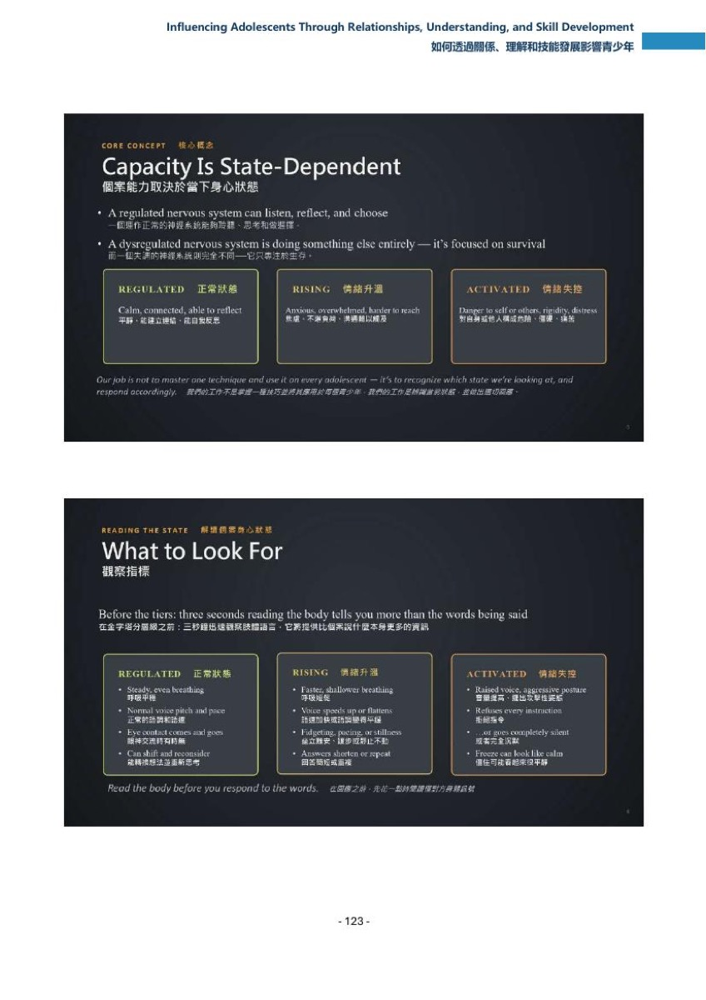
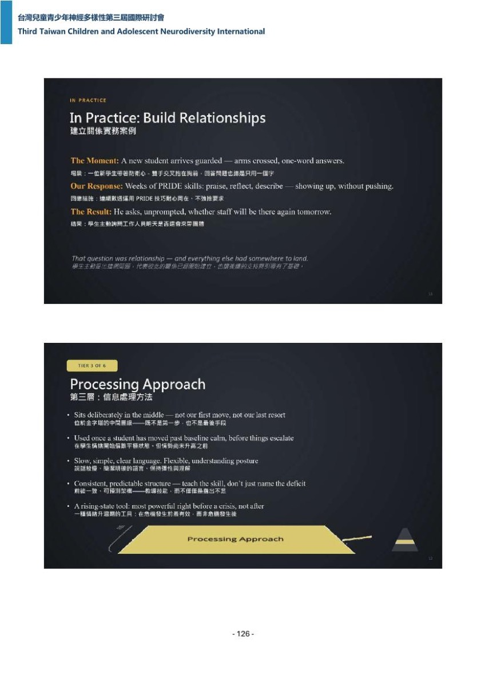
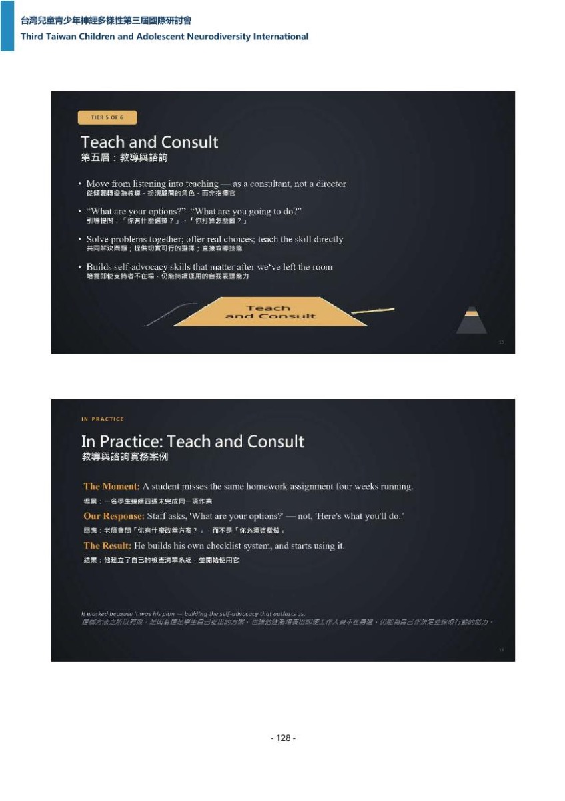
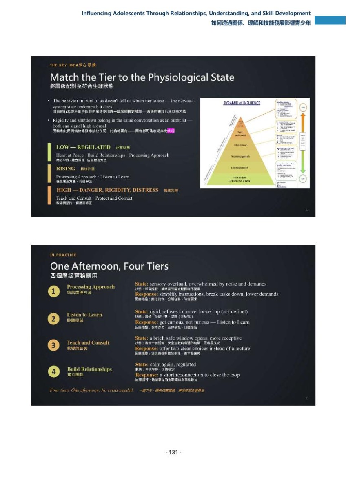
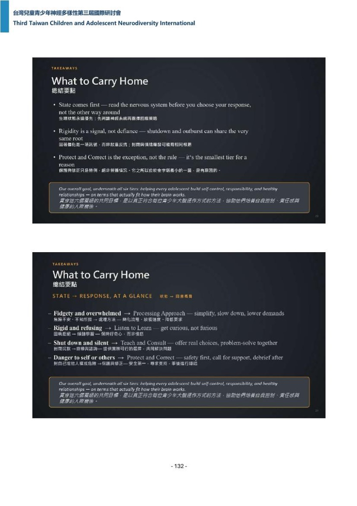
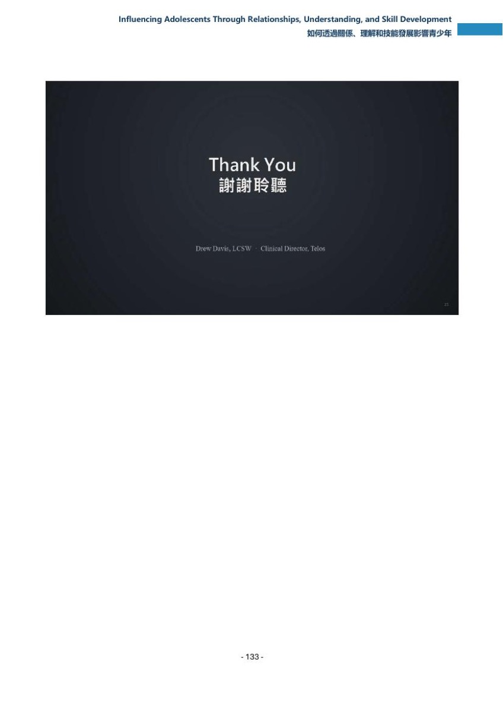

Influencing Adolescents Through Relationships, Understanding, and Skill Development
如何透過關係、理解和技能發展影響青少年
Drew Davis 先回顧當天前兩場——理解為什麼、教什麼技能——說兩者都沒回答當下怎麼回應，第三塊是影響。
頁面內常見標記：推論／推定＝整理者依現有資料的推測，不是講者原話；（口譯）＝現場口譯員的中文，不是講者本人的話；【校正】＝聽打明顯聽錯之處，整理者改用正確字，保留原始聽寫可查。
要點
每條：主張（轉述，不加引號）／依據（逐字引句與行號）／歸屬標籤／單點時戳（講者時戳，見〇節（3））。能對上投影片者附圖檔名與手冊 C 行號。
雙錨點條目的寫法：規格 §四把要點上限訂在 15 條，而本場有 21 段可獨立成條的內容，故其中 6 條各含兩個錨點——第二個錨點以行內的
**又，[時戳]（歸屬標籤）**標出，時戳、歸屬標籤、依據行號都與獨立條目一樣完整（合併只影響編號，不影響可回溯性；覆蓋度指標見查核（六），最長無時戳時窗 1 分 40 秒）。含雙錨點的是要點 2、3、4、8、14、15。
- 1｜[00:01:03]（英文逐字稿＋中文逐字稿同窗英文字串） 全場定位：前兩場講的是理解為什麼與教什麼技能，但兩者都沒告訴我們在當下該怎麼回應；第三塊、也是本場要談的，是影響。依據：兩份逐字稿各自單段逐字命中 "My final presentation brings those two conversations together."（:55 段#14，00:01:03,320–00:01:07,760；:67 段#17，00:01:02,860–00:01:07,160）＋ "Understanding tells us why a young person is struggling"（:59 段#15／:71 段#18，本句為金句 Q1）＋ "When a young person is standing in front of us"（:67 段#17／:83 段#21）；英文逐字稿另作 "Teaching gives new skills, but neither of those by itself tells us how to respond in the actual moment."（:63 段#16）＋ "There's a third piece, and it is the piece that I want to spend the remaining time on."（:71 段#18）＋ "That piece is influence."（:75 段#19）。口譯譯為「那因為光有這兩者」（口譯，:99 段#25，00:01:57,400）＋「沒有辦法直接讓我們明白」（口譯，:103 段#26）＋「在衝突真的發生的當下」（口譯，:107 段#27）＋「要怎麼樣即時去應對」（口譯，:111 段#28）＋「我們只有幾秒鐘就要決定要怎麼去反應」（口譯，:123 段#31，迄 00:02:13,460）。開場回顧的兩場：英文逐字稿作 "Earlier, we talked about clinical excellence,"（:19 段#5，00:00:17）＋ "After that, we talked about the processing approach."（:27 段#7，00:00:25）——即 S04 與 S07，順序與議程一致。
- 2｜[00:02:29] 影響力金字塔本體：Telos 建的六層架構，由底層到頂層；右側箭頭由高到低，低＝平靜受調節、高＝對自己或他人有危險或急性痛苦；愈往上，回應愈指令式，而且應該用得愈少不是愈多。依據：英文逐字稿作 "This is the Pyramid of Influence."（:91 段#23，00:02:29,680–00:02:31,580）＋ "We built it at Tilos to teach the idea I just described."（:95 段#24；Telos 在英文逐字稿被聽寫成 Tilos）＋ "That different physiological states calls for different approaches."（:99 段#25）＋ "It has six tiers, from the foundation at the bottom to the smallest tier at the top."（:103 段#26）＋ "Notice the arrow on the right hand side, it runs from high to low."（:115 段#29）＋ "Meet low meaning calm, regulated state, and high meaning danger to themselves, others, or acute distress."（:119 段#30）＋ "As we move up the pyramid, our approach becomes more directive, and that it's meant to be used less often, not more."（:123 段#31，00:03:27,560–00:03:36,360）。口譯譯為「那這個金字塔有六個層級,最底層的,最大格的那個是基礎」（口譯，:159 段#40）＋「然後一路向上延伸到頂端最小的層級」（口譯，:163 段#41）＋「所以往金字塔越上方移動,其實我們應對的方式就是越命令型的,」（口譯，:175 段#44，00:03:56,220）＋「但是它在日常生活中應該要比較少被使用到,那接下來我就會從底層一路介紹到底層。」（口譯，:179 段#45）。對應投影片 p122 下半，印刷逐字六層由下而上為「Heart at Peace／The Telos Way of Being」「Build Relationships」「Processing Approach」「Listen to Learn」「Teach and Consult」「Protect and Correct」，右側標籤「HIGH」「LOW」（
p-122.jpg，整理者核對圖檔核對；手冊 C :89）。 又，[00:04:09] 本場對象與三個要帶走的重點：團隊每天面對面工作的青少年許多被診斷為自閉症、過動症或其他神經多樣性特質；今天要帶走的是——回應為什麼必須隨神經系統狀態調整、六個層級各要求我們什麼、以及當下怎麼替眼前的孩子選對層級。依據：英文逐字稿作 "Our staff work face-to-face every day with young people who are learning to regulate, connect, and grow."（:135 段#34，00:04:09,960–00:04:15,800）＋ "Many of them are diagnosed with ASD, ADHD, and otherwise neurodivergent."（:139 段#35）＋ "There are many things I've learned that I would like for you to walk away with today."（:143 段#36，迄 00:04:25,840）＋ "First, why our response to behavior has to change alongside the young person's nervous system state?"（:147 段#37）＋ "The second is the six big tiers of the pyramid of influence, and what each one asks of us."（:155 段#39）＋ "Third, and most importantly, how to actually choose the right tier in the moment for the adolescent in front of you?"（:163 段#41）。口譯譯為「這些青少年可能有自閉症、互動症或是其他神經都讓特質」（口譯，:187 段#47；「互動症」研判為〔過動症〕之聽寫誤）＋「那我今天就希望讓大家走的時候是帶著三大訊息的要點」（口譯，:191 段#48，00:04:45,700）＋「第二個是,金字塔裡的六大成績分別是甚麼?」（口譯，:211 段#53；「成績」研判為〔層級〕之聽寫誤）＋「第三個是,當下只有幾秒鐘,你要怎樣迅速地在金字塔裡面選擇對的成績去回應眼前的孩子?」（口譯，:215 段#54）。對應投影片 p123 上半，印刷逐字「Our staff work face-to-face, every day, with young people learning to regulate, connect, and grow — many diagnosed with ASD, ADHD, or otherwise neurodivergent」（p-123.jpg，手冊 C :90）。 - 3｜[00:05:34] 核心問題：多數行為計畫預設眼前的孩子隨時有一個冷靜、能講理的大腦可用；但青少年在感官超載或關機狀態時，負責理性思考的那塊大腦會暫時斷線，規則講得多清楚、後果多一致都沒用。依據：英文逐字稿作 "Most behavior plans assume something that is not always correct, that a calm reasoning"（:171 段#43，00:05:34,320）＋ "brain is always available to the young person in front of us."（:175 段#44）＋ "For an adolescent in sensory overload or in a shutdown, that reasoning brain can be temporarily"（:179 段#45，00:05:44,620–00:05:50,360）＋ "It doesn't matter how clearly you've stated the rule, or how consistent the consequences is."（:183 段#46）。口譯譯為「我們都會假設這個孩子他當時是冷靜的」（口譯，:247 段#62）＋「他是可以講理的」（口譯，:251 段#63）＋「他處於一個感官情緒超載或是一個關機狀態的時候」（口譯，:259 段#65）＋「那個負責處理理性思考的大腦區塊會暫時斷線」（口譯，:263 段#66，00:06:22,140）。對應投影片 p123 下半，印刷逐字「Most behavior plans assume a calm, reasoning brain is always available」與「In sensory overload or shutdown, that reasoning brain can be temporarily offline — no matter how clear the rule or consistent the consequence」（
p-123.jpg，手冊 C :91）。注意：英文逐字稿段#45 句尾被切在 temporarily，下一個字（投影片印作 offline）不在英文逐字稿任何一段內（反查見查核（五）#4）。 又，[00:06:26]（中文逐字稿保留英語原句，英文逐字稿該時窗無輸出） 支撐上一條的個案：講者說他多年前帶過一個聰明、自信、智商 140 多的學生，平靜時能把規則一字不差地複述回來，但只要一崩潰，那些知識就完全調不出來；而團隊每次都用同一套後果、同一套解釋、同一種語氣回應他，不管他當下處在什麼狀態。依據：本段英語只出現在中文逐字稿——"I think of a student I worked with a few years ago,"（:267 段#67，00:06:26,640–00:06:29,760）＋ "bright, intelligent, confident, IQ in the 140s,"（:271 段#68）＋ "could explain the rules back to us perfectly in a calm moment."（:275 段#69）＋ "And yet, the instant he became overwhelmed,"（:279 段#70）＋ "none of that knowledge was available to him."（:283 段#71）＋ "We kept responding the same way every time,"（:287 段#72）＋ "the same consequence, the same explanation, the same tone,"（:291 段#73）＋ "regardless of what state he was actually in."（:295 段#74，迄 00:06:54,640）。英文逐字稿在 00:06:27,360–00:06:50,360 完全沒有字幕（指令與輸出見查核（四）#2），故本條只能靠中文逐字稿保留的英語。講者接著自評：英文逐字稿作 "The same tone, regardless of what state he was actually in, it rarely worked, and looking back I understand why."（:191 段#48，00:06:50,360）。本條的智商數值與「多年前」皆為講者口述／聽寫，待確認（五節）；口譯未見對應的中文（反查見查核（五）#5），兩份逐字稿在 00:06:59,640–00:07:20,360 另有 20.7 秒雙遍全空（查核（四）#3），這段很可能就是被兩份逐字稿都漏掉的口譯。 - 4｜[00:08:35] 核心概念：受調節的神經系統能聽、能反思、能選擇，失調的神經系統做的是完全另一件事——求生存；所以我們的工作不是練熟一招對所有孩子隨時套用，而是辨識眼前是哪一種狀態（受調節／升溫／激動）再據以回應。依據：英文逐字稿作 "A regulated nervous system can listen, reflect and choose."（:215 段#54，00:08:35,120）＋ "A dysregulated nervous system is doing something else entirely."（:219 段#55）＋ "It is focused on survival."（:223 段#56）＋ "So our job is not to master one technique and use it with every adolescent in every moment."（:227 段#57）＋ "Our job is to recognize which state we are looking at, regulate, rising or activated, and respond accordingly."（:231 段#58，00:08:52,000–00:08:59,140）＋ "That single idea is the engine behind the framework of the Pyramid of Influence."（:235 段#59）。口譯譯為「現在是處於一個調節的狀態,它是可以聽人講話,然後進行理性思考和選擇的」（口譯，:343 段#86）＋「它是在啟動本能生存機制」（口譯，:351 段#88）＋「所以我們就不能用單一技巧去硬套在所有孩子的隨時的狀態下」（口譯，:355 段#89，00:09:23,980）＋「而是去辨識出當下眼前孩子是屬於哪一個狀態」（口譯，:359 段#90）。對應投影片 p124 上半，印刷逐字「Our job is not to master one technique and use it on every adolescent — it's to recognize which state we're looking at, and respond accordingly」，三狀態框為「REGULATED正常狀態」「RISING情緒升溫」「ACTIVATED情緒失控」（
p-124.jpg，手冊 C :92）。 又，[00:10:10] 讀狀態的示範與紀律：兩個學生並排，一個離座、講話很大聲、雙手揮舞，另一個一動不動、盯著桌面、什麼都不說——多數人會說第一個需要馬上處理、第二個沒事；讀身體語言而不是讀音量，你可能會發現正好相反。紀律是：在決定要說什麼之前，先花三秒讀對方的呼吸、語調、姿勢、眼神；這三秒告訴你的比對方說的話還多，也告訴你該用金字塔的哪一層。依據：英文逐字稿作 "Picture two students, side by side. One is out of the seat, talking loudly, hands moving. The other is sitting perfectly still, staring at his desk, saying nothing. Most of us would say the first student needs our attention right now, and the second one is fine. Read the body language instead of the noise, and you may find the opposite to be true."（:279 段#70，00:10:10,100–00:10:31,700，21.6 秒合併段，起點不可信，見〇節（3））＋ "Before you decide what to say, spend three seconds reading the body in front of you, breathing, voice, posture, eye contact."（:367 段#92，00:13:53,440）＋ "That three-second read will tell you more than the word being said, and it will tell you which tier of the pyramid of influence you need."（:371 段#93，00:14:03,360–00:14:10,780）。口譯譯為「有一個人他講話很大聲然後講話的時候揮動他的雙手」（口譯，:379 段#95，00:10:35,120）＋「另外一個人只是安靜的坐在這個椅子上面」（口譯，:383 段#96）＋「就是也許其實第二個看似平靜的學生他才是目前有狀況的一位」（口譯，:403 段#101）＋「請花三秒鐘觀察對方的這個生理訊號」（口譯，:635 段#159，00:14:27,020，晚 16.2 秒／基準句 :371）＋「觀察他的呼吸眼神還有這個語調的節奏」（口譯，:639 段#160）。講者另指出這件事不需要臨床學位——英文逐字稿作 "It doesn't require a clinical degree to notice. It requires slowing down long enough to look. Most of us are trained by instinct and by habit to listen to the words first. I'm asking you to reserve that work."（:351 段#88，00:12:55,080）；口譯譯為「其實要判斷這些狀態不需要醫生的學歷」（口譯，:555 段#139）。對應投影片 p124 下半，印刷逐字「Before the tiers: three seconds reading the body tells you more than the words being said」與「Read the body before you respond to the words.」（p-124.jpg，手冊 C :93）。 - 5｜[00:12:15]（英文逐字稿＋中文逐字稿同窗英文字串） 最容易被漏掉的提醒：激動狀態通常大聲到沒人會錯過——提高音量、逼近的姿態、拒絕一切指令——但激動不一定看起來很大聲，有時候它看起來什麼都沒發生。依據：兩份逐字稿各自單段逐字命中 "activated state is usually loud enough that no one misses it"（:335 段#84，00:12:15,560–00:12:20,340；:495 段#124，00:12:15,480–00:12:20,180）＋ "Raised voice, aggressive posture, refusing every instruction"（:339 段#85／:499 段#125）＋ "But I want to add caution here that we'll return to in a moment"（:343 段#86／:503 段#126）＋ "ometimes it looks like nothing at all"（:347 段#87／:507 段#127；兩份逐字稿此句句讀不同——英文逐字稿作 "Activation does not always look loud. Sometimes it looks like nothing at all."、中文逐字稿作 "Activation does not always look loud, sometimes it looks like nothing at all"，故同窗同一字串只取後半）。口譯譯為「越大聲不代表他就是越激動的狀態」（口譯，:527 段#132，00:12:47,780）＋「但是他的發出的聲音沒有到那麼大」（口譯，:535 段#134）。
- 6｜[00:15:01]（英文逐字稿＋中文逐字稿同窗英文字串） 激動有三種面貌、只有一種是大聲的：對抗（fight）最好認，因為它自己會宣告；逃跑（flight）常被大人讀成逃避責任或不尊重，其實是神經系統想跟不安全的東西拉開距離；僵住（freeze）最常被漏掉，也可能是三者中最重要的一種。依據：英文逐字稿作 "There's one more distinction I want to make before we move to the tiers itself, because it's changed how we read an activated state. Most of us were taught to think of an activated nervous system as one thing. In practice, it shows up as three very different things, and only one of them is loud."（:383 段#96，00:15:01,360）；兩份逐字稿各自單段逐字命中 "Fight looks like we expect, yelling, throwing, squaring up, refusing outright."（:395 段#99，00:15:37,120–00:15:43,880；:667 段#167，00:15:36,660–00:15:47,600）＋ "Freeze is the one we miss most often"（:415 段#104，00:16:53,380–00:16:57,980；:715 段#179，00:16:53,660–00:16:55,780，本句為金句 Q2）＋ "and it may be the most important of the three"（:415 段#104／:719 段#180）。逃跑的描述只在英文逐字稿：作 "to stay in the conversation, needing to move, it can be mistaken for avoidance or disrespect when it is often the nervous system trying to create distance from something that feels unsafe."（:407 段#102，00:16:18,920，節錄自段中，句首被切）。口譯譯為「我們在講到最激動的那個activated的狀態的時候,其實是有不一樣的呈現方式,我翻成三種,但只有一種是會出現很大的聲音的。」（口譯，:663 段#166，00:15:19,660，晚 0.8 秒／基準句 :383）＋「那第二種activating的狀態就是逃跑的一個表現」（口譯，:679 段#170）＋「但其實孩子他可能只是因為覺得不安全感」（口譯，:707 段#177）＋「而想要創造一個物理上面的距離」（口譯，:711 段#178）＋「因為他不太會發出聲音,所以大人會以為他現場是還好的狀態」（口譯，:735 段#184，00:17:32,300，晚 21.4 秒／基準句 :419）。對應投影片 p125 上半，印刷三欄逐字為「FIGHT對抗」「FLIGHT逃跑」「FREEZE僵化不動」（
p-125.jpg，整理者核對圖檔核對；手冊 C :94）。 - 7｜[00:18:12]（英文逐字稿＋中文逐字稿同窗英文字串） 本場對神經多樣性最關鍵的一段，也是講者自陳犯過的錯：自閉症學生在感官超載時變得安靜不動，不是在對抗；過動症學生突然答不出一個簡單問題，不是在拖延——兩種情況都是中樞神經系統到了極限，用它僅剩的方式在告訴我們。他要大家避免的錯誤，就是把僵住的孩子讀成順從或讀成對抗，而他的神經系統其實跟在房間另一頭大吼的那個一樣激動。依據：兩份逐字稿各自單段逐字命中 "student with autism who goes still and quiet during a sensory overload is not being defiant"（:455 段#114，00:18:16,360–00:18:22,700；:763 段#191，00:18:16,160–00:18:22,480，本句為金句 Q3）＋ "who suddenly cannot answer a simple question is not stalling"（:459 段#115／:767 段#192）＋ "the central nervous system has simply reached its limit"（:463 段#116／:771 段#193）＋ "and it is showing us the only way it has left"（:467 段#117／:775 段#194）＋ "eading a frozen young person is compliant"（:475 段#119／:783 段#196）。英文逐字稿另作 "This matters especially for the neurodivergent young people many of us work with."（:451 段#113，00:18:12,160）＋ "Here's a mistake I want you to avoid, because I have made it myself."（:471 段#118）＋ "A quiet room is not always a calm room."（:483 段#121，00:18:50,180–00:18:53,180，中文逐字稿同窗無此英文字串，故不列金句）。口譯譯為「一個安靜的房間不代表是一個平靜的房間」（口譯，:795 段#199，00:19:16,740，晚 23.6 秒／基準句 :483）。對應投影片 p125 上半，印刷逐字「A quiet room is not always a calm room.」（
p-125.jpg，整理者核對圖檔核對；手冊 C :94）。講者隨後區分三種狀態各要什麼：英文逐字稿作 "Fight asks for space and a lower voice."（:487 段#122）＋ "Flight asks for room to move and time before we press for words."（:491 段#123）＋ "Freeze asks for patience and often silence of our own before we ask anything at all."（:495 段#124），並說 "I'd rather have you leave today, be able to name all three of these accurately, than be able to recite all six tiers of the Pyramid of Influence from memory."（:511 段#128，00:19:59,640）。 - 8｜[00:21:13] 第一層 Heart at Peace（平靜的內心）：這是金字塔的根基，也是 Telos 思維模式的一部分，因為其他每一層都靠它；失調的大人沒辦法協助失調的青少年調節情緒，我們自己的平靜在說出第一個字之前就已經是第一個介入；講者用不沾鍋（Teflon demeanor）形容它——溫和、耐心、冷靜、尊重，讓東西黏不上來。依據：英文逐字稿作 "A dysregulated adult cannot co-regulate a dysregulated adolescent."（:527 段#132，00:21:13,360–00:21:18,360）＋ "Our own column is the first intervention before we've said a single word."（:531 段#133，迄 00:21:23,860；column 研判為 calm 之聽寫誤）＋ "because everything else in the pyramid depends on it."（:523 段#131）＋ "We describe this again as the Teflon demeanor, kind, patient, calm, respectful, so that nothing sticks to us."（:563 段#141，00:21:52,480）＋ "If this is the only tier we ever get right, we're still ahead of where most well-meaning adults start."（:567 段#142，00:22:00,480）。口譯譯為「那如果今天這個大人自身情緒失控」（口譯，:843 段#211）＋「那你就不可能要求一個青少年」（口譯，:847 段#212）＋「跟你一起調節他的情緒」（口譯，:851 段#213）＋「所以我們在開口講出任何話之前」（口譯，:859 段#215，00:21:45,820）＋「第一個最重要的介入方式」（口譯，:867 段#217）＋「就是我們要保持溫和,耐心,冷靜,尊重,不要讓孩子講的一些情緒、語言黏在我身上,就像不沾鍋要把那些東西甩掉,那如果我們可以當一個不沾鍋的話,其實我們就已經走在很多大人前面了。」（口譯，:875 段#219，00:22:13,060）。對應投影片 p125 下半，印刷逐字「A dysregulated adult cannot co-regulate a dysregulated adolescent」「Teflon Demeanor: kind, patient, calm, respectful — so nothing sticks」「Get this tier right, and you're ahead of where most well-meaning adults start」（
p-125.jpg，整理者核對圖檔核對；手冊 C :95）。 又，[00:22:29]（英文逐字稿＋中文逐字稿同窗英文字串） 第一層的實例：幾個月前一位工作人員自己度過了很難的一個早上，十五分鐘後一名學生拒絕一個簡單要求——把書收起來、準備上團體課——並開始提高音量。舊本能是回敬同樣的能量、把指令講得更硬；他改成降低自己的音量、放慢自己的呼吸，只說我聽到你了、我們一起想辦法，然後等待。指令一個字都沒改，變的是房間裡的神經系統：約三十秒後學生的音量跟著降下來。依據：兩份逐字稿各自單段逐字命中 "A few months ago, one of our staff members walked into the milieu after a genuinely hard morning of his own."（:575 段#144，00:22:29,360–00:22:35,860；:879 段#220，00:22:27,540–00:22:36,140）＋ "The old instinct is to match that energy, raise your own voice, repeat the instruction more firmly, hold the line."（:587 段#147／:891 段#223）＋ "Instead, our staff member did something quieter"（:595 段#149／:899 段#225）＋ "changed was the nervous system in the room"。英文逐字稿另作 "Within about 30 seconds, the student's voice dropped to match his."（:603 段#151，00:23:58,260–00:24:01,540）＋ "Our calm was the intervention before a single strategy from any other tier was ever needed."（:623 段#156，00:24:20,040）＋ "and notice what it costs, nothing but a few seconds and our own regulation."（:627 段#157）。口譯譯為「那我們的工作人沒有對著他吼不去,那我們工作人做一件事情就是降低自己的音量,放慢自己的呼吸」（口譯，:915 段#229，00:23:30,040，晚 19.3 秒／基準句 :595）＋「不是學生的呼吸和音量,是自己的呼吸和音量」（口譯，:919 段#230）＋「然後就很平靜地跟那個學生說,喔,我聽到你了,我們一起來想辦法,然後就安靜等待,結果不到一分鐘,該名學生的音量就跟著降下來了。」（口譯，:923 段#231）＋「它在運用任何其他策略前就會有發揮了關鍵作用」（口譯，:971 段#243）。對應投影片 p126 上半，印刷逐字「The Result: The student's voice drops to match his — in under a minute.」與「Our calm was the intervention, before any other tier was needed.」（p-126.jpg，手冊 C :96）。注意口譯與投影片都作「不到一分鐘」，英文逐字稿作 30 秒，三者不衝突但精度不同，對外引用以英文逐字稿為準。 - 9｜[00:25:10]（英文逐字稿＋中文逐字稿同窗英文字串） 第二層 Build Relationships（建立關係）：連結創造影響力，而長期真正改變行為的是影響力、不是服從；對那些長年先被糾正、才有人願意認識他們的孩子尤其如此。工具是 PRIDE（讚美、覆述、模仿、描述、享受相處）加上傾聽、肯定、同理，同時維持堅定而尊重的界線。實例：一名新生帶著防衛心到校，雙手交叉、只用一個字回答、每次對話都被他丟回一句冷淡的你幹嘛在乎；團隊連續數週不強推，只用 PRIDE 陪著。轉折點不是什麼突破性的會談，而是他主動問工作人員明天還會不會來帶團體。依據：兩份逐字稿各自單段逐字命中 "In short, we show we care before we ask for change. I've never once seen an"（:691 段#173，00:26:12,780–00:26:18,780；:1031 段#258，00:26:13,720–00:26:22,120，本句為金句 Q4）。英文逐字稿另作 "The second tier is build relationships. Connection creates influence, and influence, not compliance, is what actually changed behaviors over the long run."（:675 段#169，00:25:10,440）＋ "This matters enormously for young people who have often been met with correction first, over and over, before anyone tried to simply get to know them."（:679 段#170）＋ "We use what we call pride skills, praise, reflect, imitate, describe,"（:683 段#171）＋ "and enjoy. Alongside that, we listen, affirm, and validate while still holding firm, respectful"（:687 段#172）＋ "adolescent make lasting change for someone they did not trust."（:695 段#174）＋ "The turning point wasn't a breakthrough session."（:767 段#192，00:28:25,920）＋ "He asked the staff member, unprompted, whether she'd be in group that next day."（:771 段#193）＋ "That question was relationship, and once it existed, everything else we tried to teach him had somewhere to land."（:775 段#194，00:28:50,320）＋ "No technique in this pyramid works on a young person who does not yet trust the person using it."（:783 段#196）＋ "I want to be honest that this is a slower than most of us would prefer."（:787 段#197）。口譯譯為「因為情感連結可以創造實質的影響力,而影響力而非強迫他們的順從,才是帶來」（口譯，:991 段#248，00:25:38,000）＋「長期改變的真正動力」（口譯，:995 段#249）＋「特別是我們面對的是之前總是對大人感到失望的這樣的孩子」（口譯，:1043 段#261，00:27:43,720，晚 80.9 秒／基準句 :695）＋「他的防衛心就很重」（口譯，:1051 段#263）＋「然後我們每次跟他對話他都會回說該你們的事」（口譯，:1059 段#265）＋「這個孩子他就主動問我們的工作人員」（口譯，:1083 段#271）＋「其實這一句主動的提問就象徵著關係是建立了」（口譯，:1095 段#274）。對應投影片 p126 下半與 p127 上半，印刷逐字「Connection creates influence — influence, not compliance, changes behavior」「PRIDE skills: Praise, Reflect, Imitate, Describe, Enjoy」「LAV — Listen, Affirm, Validate — alongside firm, respectful boundaries」「We show we care before we ask for change」「The Result: He asks, unprompted, whether staff will be there again tomorrow.」（
p-126.jpg／p-127.jpg，手冊 C :97–:98）。 - 10｜[00:29:55] 第三層被講者當場跳過，第四層是聆聽以理解：他說第三層信息處理方法大家已經很熟、就是上一場整場在講的架構，所以直接跳過投影片；第四層 Listen to Learn 的要求是教之前先聽，而且要帶著真誠的好奇、不是帶著火氣，工具是發言棒（talking stick）——一個標示現在輪到誰講話的具體視覺提示，對抓不準一般對話節奏的青少年特別有效；問開放式問題，先接住情緒再處理行為，找的是雙贏、依原則而非處罰。這一層對臨床與照顧者最難的地方，是要真的還不知道答案、卻願意去找出來。依據：英文逐字稿作 "The third tier is one you already know well, so I'm actually going to skip this slide, it's the processing approach, the framework that we just spent our last session on."（:823 段#206，00:29:55,940–00:30:10,820）＋ "The fourth tier is listen to learn. Before we teach anything, we listen."（:827 段#207）＋ "It is a concrete visual cue for whose turn it is to speak and it works especially well with young people who find the timing of typical conversations hard to track"（:835 段#209）＋ "We ask open questions, we validate the emotion before we address the behavior."（:855 段#214，00:31:25,860）＋ "We look for solutions that work for everyone, grounded in principles rather than punishment."（:859 段#215）＋ "This tier asks something difficult of us clinicians and caregivers, to genuinely not know the answer yet, but be willing to find out."（:863 段#216，00:31:32,100）。口譯譯為「第三層就是我們早上花了整個演講探討的手段,因為早上我講得很詳細,上這個層級我就會先跳過。」（口譯，:1143 段#286，00:30:11,060；口譯說「早上」與議程不符——英文逐字稿作 our last session，S07 為 14:30–15:20 的下午場）＋「那我們在教這個孩子之前」（口譯，:1159 段#290）＋「我們要先學會傾聽他」（口譯，:1163 段#291）＋「是要真正對他感到好奇」（口譯，:1171 段#293）＋「就是發言棒這個工具」（口譯，:1183 段#296）＋「這個層級的話也是鼓勵大家要提出開放性的問題」（口譯，:1207 段#302，00:31:40,500）＋「不是你不聽我的就處罰你這樣子」（口譯，:1219 段#305）＋「但是我非常的真誠地想要知道」（口譯，:1235 段#309）。本條是本檔與 S07 在內容層的唯一交叉引用點（場次名、判讀依據等 metadata 層另有數處提及 S07）：講者只說了第三層就是上一場那套架構，本檔不引 S07 任何內容（S07 逐字稿未轉錄）。對應投影片 p127 下半與 p128 上半，印刷逐字「Sits deliberately in the middle — not our first move, not our last resort」「Before we teach, we listen — genuinely curious, not furious」「The Talking Stick: a visual cue for whose turn it is to speak」（
p-127.jpg／p-128.jpg，手冊 C :99–:100）。 - 11｜[00:32:12]（英文逐字稿＋中文逐字稿同窗英文字串） 第四層的實例與本層核心：一名學生要求把同組的同學調走；簡單的回應是糾正他的語氣或直接說不，工作人員改成拿起發言棒、坐下來只問一句「從頭告訴我發生了什麼事」。講出來的根本不是那位同學，而是他午餐時覺得被排除在對話外，勾起了他來機構之前一次又一次被排擠的經驗；於是介入完全不是針對那位同學，而是幫他把那種被排除的感覺說出口，並給他能要求被納入、而不是要求把人移走的語言。講者的結論是：如果我們在聽底下是什麼之前就先處理行為，就會完全錯過這一段——行為就是溝通，我們無法回應一則從沒花時間接收的訊息。依據：兩份逐字稿各自單段逐字命中 "The easy response would have been to correct the tone, or simply just say no."（:883 段#221，00:32:19,160；:1239 段#310，00:32:09,500）＋ "We would have missed that completely if we had addressed the behavior before we listened to what was underneath that."＋ "The complaint about the peer was real, but it was not the actual problem"（:919 段#230／:1259 段#315）＋ "That is the whole point of this tier."（:927 段#232／:1263 段#316）＋ "and we cannot respond to a message we never took the time to receive."（:935 段#234／:1267 段#317）。英文逐字稿另作 "Behavior is communication,"（:931 段#233）＋ "Instead, the staff picked up the talking stick, sat down and asked one question."（:887 段#222，00:32:23,840）＋ "What came out wasn't really about the peer, it was that the boy felt he was left out"（:895 段#224）＋ "to ask to be included instead of demanding to be removed."（:911 段#228）。口譯譯為「舉個例子,也是在我們機構裡面有一個同學他很生氣,然後要求我們的工作人員把其中一個同組的同學要調走,他不想拿一組的,那我們生活陪伴師就拿起發言報道他講說,欸,可不可以從頭告訴我發生了什麼事情。」（口譯，:1243 段#311，00:32:31,880，晚 3.4 秒／基準句 :887；「發言報道」研判為〔發言棒〕之聽寫誤）＋「經過梳理後,我們才發現真正的起因是因為這個同學在中午吃飯的時候感覺到被排擠,然後他就觸發了他以前甚至來到我們機構之前就有了一個被排擠的創傷經驗,所以他其實也不是真的很討厭那個同學。所以有的時候我們就是要經過梳理才可以找到問題的真正主因。」（口譯，:1251 段#313）＋「所以就是我們必須要很認真的去聽所有行為背後的訊息」（口譯，:1287 段#322，00:34:36,220，晚 31.4 秒／基準句 :935）。對應投影片 p128 下半，印刷逐字「Behavior is communication. We can't respond to a message we never heard.」（
p-128.jpg，手冊 C :101；投影片印 never heard、逐字稿兩份逐字稿皆作 never took the time to receive，對外引用須擇一並標來源）。 - 12｜[00:34:16] 第五層 Teach and Consult（教導與諮詢）：從傾聽轉入主動教導，但角色是顧問不是指揮官；問的是你有哪些選項、你打算怎麼做；一起解決問題、給真正的選擇、直接把技能教給他，建立的是我們離開房間以後還帶得走的自我倡導能力。實例：一名學生連續四週沒交同一份作業，工作人員沒有說教，只問他有哪些選項；他自己想出三個做法、挑了一個——在活頁夾裡貼一張檢查清單，每天做完打勾。它有效不是因為清單聰明（包括講者自己在內，早就有很多大人建議過這張清單），而是因為那是他的計畫。依據：英文逐字稿作 "The fifth tier is teach and consult."＋ "Here we move from listening into active teaching, but we do it as a consultant, not a director."（:955 段#239，00:34:45,120）＋ "We ask questions like, what are your options, and what are you going to do?"（:959 段#240）＋ "We solve problems together, we offer real choices, we teach the skill directly rather than simply naming what we brought."（:963 段#241，00:34:59,520–00:35:24,420）＋ "This tier is where a young person builds self-advocacy skills that matter long after we've left the room. Skills no one can hand to them, only them, only help them practice."（:967 段#242）＋ "He came up with three ideas on his own and picked one. A checklist taped inside to his binder, checked off before he started his adventure team every day. It worked. Not because the checklist was clever. Plenty of adults had suggested this checklist before, including myself. It worked because it was his plan, not ours. And he had a hand in solving his own problem."（:979 段#245，00:36:54,420–00:37:17,820）＋ "That's the tier doing exactly what it's meant to do. Building self-advocacy that outlasts us. We will not be standing next to him in 10 years."（:983 段#246，00:37:18,320）。案例的起手段落只在中文逐字稿保留英語、英文逐字稿該時窗無輸出（00:35:58,420–00:36:24,420 英文逐字稿無字幕，見查核（四）#2）："one of our students missed the same therapeutic worksheet assignment four weeks in a row"（:1311 段#328，00:36:05,460）＋ "we have all either lectured or been lectured around situations like this and it just does not work"（:1319 段#330）＋ "instead of lecturing the staff sat with them and asked what are your options here"（:1323 段#331）。口譯譯為「在這個層級我們要做的是共同解決問題,提供他們選項,然後直接傳授他們生活技能,不是告訴他們什麼是對的什麼是錯的。」（口譯，:1299 段#325，00:35:36,460）＋「所以這一層的目的是要建立自我倡導能力,這項能力是很重要的,就是希望可以長久陪伴孩子。」（口譯，:1303 段#326）＋「舉個例子,我們機構裡面有一個學生,他連續四周都沒有好好教作業」（口譯，:1331 段#333，00:36:40,160）＋「然後最後採納了其中一個就是在她的那個書的活頁夾貼上檢查清單」（口譯，:1347 段#337，00:37:21,380，晚 3.6 秒／基準句 :979）＋「而是因為這是她自己想出來的計劃」（口譯，:1363 段#341）＋「這就是我們剛剛講的這層阻止是要建立自我倡導能力,自我倡導能力,因為我們十年後不可能還在陪著孩子做作業,我們希望這個技巧是超越貼上檢查清單這個動作的意義本色。」（口譯，:1387 段#347，00:37:50,100）。對應投影片 p129 上半與下半，印刷逐字「Move from listening into teaching — as a consultant, not a director」「The Moment: A student misses the same homework assignment four weeks running.」「It worked because it was his plan — building the self-advocacy that outlasts us.」（
p-129.jpg，手冊 C :102–:103；投影片印 homework assignment、中文逐字稿保留的英語作 therapeutic worksheet assignment）。 - 13｜[00:38:18] 第六層 Protect and Correct（保護與修正）：第六層也是最小的一層；講者特別說清楚它不是規則被違反時的第一反應，而是在對自己或他人有危險、極度固執或急性痛苦時才用；實務上可能是換人接手、把圍觀者（手足、家人或其他學生）排開、必要時報警；而且每次使用之後一定要做事後回顧（debriefing），為的是重新連結與重建。依據：英文逐字稿作 "The sixth and smallest tier is protected and correct, and I want to be very clear here when we need to use it, it is not our first response when a rule is broken, it is our response when there is danger to himself, others, extreme rigidity or acute distress."（:1007 段#252，00:38:18,100–00:38:42,100；protected 研判為 protect 之聽寫誤）＋ "In practice, that might mean switching parents, removing an audience like siblings or other family or students, or calling the police authorities if needed."（:1011 段#253，00:38:43,100–00:38:52,460；switching parents 研判為 switching staff 之聽寫誤，同）＋ "This is always followed up with the debriefing for connection and rebuilding."（:1015 段#254）。口譯譯為「自己危險或是極端的狀況的時候才使用」（口譯，:1399 段#350）＋「比如說你可能會需要更換陪伴人員」（口譯，:1403 段#351，00:39:24,420）＋「或是你要排除在圍觀的群眾」（口譯，:1407 段#352）＋「或是必要的時候啟動通報流程」（口譯，:1415 段#354）＋「都要進行一個debriefing」（口譯，:1427 段#357）＋「然後重新建立連結和安全感」（口譯，:1439 段#360）。對應投影片 p130 上半，印刷逐字「The smallest tier — and it should stay that way」「Used for danger to self or others, extreme rigidity, or acute distress」「Always followed by a debrief — for connection and rebuilding」「Spending most of your time here is a sign something below was missed」（
p-130.jpg，手冊 C :104）。口譯把 switching parents 譯成更換陪伴人員，與英文逐字稿字面不同、與語意相符，本檔照抄兩者不逕改。 - 14｜[00:39:49]（英文逐字稿＋中文逐字稿同窗英文字串） 真的動手的那一刻：講者說要花一點時間談沒有人期待的時刻——當保護與修正不再是假設，學生、個案或你自己的孩子出現肢體攻擊；好消息是讓那種時刻不變成危機的，多半仍然是口語而不是肢體，因此 CPI 降溫模式值得知道，不論你受過他們的訓練與否。他隨即列出幾項核心技巧：有同理、不評斷（情緒是真的，即使行為不 OK）；尊重個人空間、注意自己的站位；用不具威脅的肢體語言（語氣與姿態比話語說得更多）；管好自己的情緒腦；不捲入挑釁的問題，把話題導回議題而不是爭辯；界線要簡單、尊重、數量少；容許沉默與時間——多給幾秒鐘做決定，往往就是配合與爆發的差別。依據：兩份逐字稿各自單段逐字命中 "Before we move on, I want to spend a moment on the moment none of us look forward to."（:1039 段#260，00:39:49,340–00:39:53,740；:1443 段#361，00:39:49,700–00:39:53,360）＋ "and a student, a client, or your own child becomes physically aggressive."（:1043 段#261／:1451 段#363）＋ "most of what keeps a moment like that from becoming a crisis"（:1047 段#262／:1455 段#364）＋ "is still verbal, not physical."（:1047 段#262／:1459 段#365）＋ "whether or not you've been through their training."（:1051 段#263／:1467 段#367）＋ "Don't engage in challenging questions"（:1099 段#275／:1511 段#378）＋ "s often the difference between compliance and explosion"（:1115 段#279／:1539 段#385）。英文逐字稿另作 "A few of their core techniques, be empathetic, non-judgmental."（:1071 段#268，00:41:17,480）＋ "Keep your own emotional brain in check,"（:1091 段#273）。口譯譯為「不管你有沒有受過訓練的話,你都可以利用危機當下的即時降溫心法來面對」（口譯，:1487 段#372，00:41:07,560，晚 48.0 秒／基準句 :1051）＋「就是其實降溫心法就是有保持同理」（口譯，:1555 段#389）。對應投影片 p130 下半，印刷條列 7 項技巧（
p-130.jpg，手冊 C :105）。CPI 機構全名在本檔出現三種寫法，而三者之中與外界通行機構名最接近的那一種，恰恰落在本檔判為解碼偽影的複製段內推論：——哪一種才是講者真的說的，受信任層裡沒有依據，本檔不作判定；枚舉與判讀 與查核（四）#4。 又，[00:42:33] 同一層、三種角色的現場版本：老師版是學生掀桌、丟書、逼近同學——狀態是對他人有危險，回應是立刻發出求援訊號（對講機、廣播或請人去辦公室通報）、平靜地疏散周圍學生、保持平穩語氣、行政人員到場後交接，事後做回顧。家長版是青少年摔門、捶牆、說她想傷害自己——那不是發脾氣，是安全危機，回應是把其他孩子帶離現場、保持自己的聲音與身體平穩、打電話給另一半或其他可信任的大人，有真實風險就叫緊急服務。治療師版講者當場跳過，並說三者全是同一層、房間完全不同；不變的是那個模式——讀狀態、針對它具體回應、永遠不要一個人扛。依據：英文逐字稿作 "Picture a teacher's version."（:1127 段#282，00:42:33,300）＋ "A student flips his desk, throws a book, and squares up towards a classmate."（:1131 段#283）＋ "Hand off to the administrator once they arrive and debrief afterwards."（:1155 段#289，00:42:52,980–00:42:56,960）＋ "Picture a parent's version. Your teenager slams the door, punches the wall, and says she wants to hurt herself. That's not a tantrum, that's a safety crisis. The response, get the other children out of the room. Keep your own voice and body calm. Call your partner or another trusted adult. And if there's a real risk, call emergency services. That is exactly the moment they call Exist for."（:1167 段#292，00:43:21,940–00:43:44,980；末句 they call Exist for 語意不通）＋ "Skip that therapist version and go to the next one. It's all the same tier, protect and correct, completely different rooms. What stays constant is the pattern. Read the state, respond to it specifically, and never carry it alone."（:1175 段#294，00:44:04,500–00:44:18,660）。口譯譯為「假設我們這邊有一些危機應對的事物啊你發生在學校的話可能也許是班上一個學生他生氣」（口譯，:1611 段#403，00:42:57,000）＋「那老師的應用措施就是可以」（口譯，:1631 段#408，00:43:11,640）＋「疏散周圍的學生保持語氣平靜」（口譯，:1639 段#410）＋「家長的版本或是你的小孩可能摔門、摧牆、想要自傷。」（口譯，:1695 段#424，00:43:46,100）＋「那這次安全危機就不是單純發脾氣而已。」（口譯，:1699 段#425）＋「所以其實這上面三個案例」（口譯，:1739 段#435，00:44:18,800）＋「就是請大家要辨認出正確的狀態」（口譯，:1755 段#439）。對應投影片 p131 上半與下半，印刷逐字「Verbal first. Support early. Hands-off whenever possible — always followed by a debrief.」與教師案例「State: a student flips his desk, throws a book, and squares up toward a classmate — danger to others」（p-131.jpg，手冊 C :106–:107；投影片印 toward a classmate、逐字稿作 towards a classmate）。 - 15｜[00:44:35] 全場核心思維與狀態對照表：眼前的行為本身不會告訴我們該用哪一層，行為底下的神經系統狀態才會；這代表固著與當機跟爆發屬於同一個對話——兩者都可能是高激發，只是表面看起來完全不同，一個變得安靜不動的孩子可能跟正在大吼的那個一樣激動。對照是：低／受調節→平靜的內心、建立關係、信息處理方法；升溫→信息處理方法、聆聽以理解；高（對自己或他人有危險、高度僵化、急性痛苦）→教導與諮詢，真的必要時才用保護與修正。同一個孩子、同一天、有時甚至同一個小時，用的層級會不同，因為生理狀態變了。依據：英文逐字稿作 "The behavior in front of us does not, by itself, tell us which tier to use."（:1183 段#296，00:44:35,700）＋ "The nervous state system underneath the behavior does."（:1187 段#297）＋ "That means rigidity and shutdown belong in the same conversation as an outburst."（:1191 段#298）＋ "Both can signal high arousal, even though they look completely different on the surface."（:1195 段#299）＋ "The young person who has gone still and silent may be every bit as activated as one who is shouting."（:1199 段#300）＋ "When we match our tear to the physiological state, rather than the surface behavior, we stop mistaking a central nervous system in crisis for a young person simply being defiant."（:1203 段#301，00:45:00,700–00:45:13,700；tear 為 tier 之聽寫誤，全檔多處）＋ "Low regulated states calls for the foundation, heart of peace, build relationship and processing approach. A rising state calls for processing approach and listen to learn. High states, danger to themselves, others high rigidity, acute distress calls for teaching and consulting."（:1239 段#310，00:45:54,700）＋ "for teaching consult when truly necessary, protecting correct. Same young person, same day, sometimes the same hour, but different years, because the physiological state has changed."（:1243 段#311，00:46:11,700–00:46:22,820；different years 為 different tiers 之聽寫誤，同）。口譯譯為「外在的行為本身沒有辦法告訴我們要有哪一個層級。」（口譯，:1775 段#444，00:45:20,900）＋「底層的神經系統生理狀態才是關鍵」（口譯，:1783 段#446）＋「就是 fight, flight 和 freeze」（口譯，:1799 段#450）＋「其實他們可能都已經是情緒很高漲的狀態下了」（口譯，:1815 段#454）＋「的狀態的話,我們就需要用到第六個層級,就是比較極端的狀況下,protect and correct,那同樣一個孩子他可能一個下午會經歷不同的層級。」（口譯，:1863 段#466，00:46:49,900，晚 27.1 秒／基準句 :1243）。對應投影片 p132 上半與下半，印刷逐字「The behavior in front of us doesn't tell us which tier to use — the nervous-system state underneath it does」「Rigidity and shutdown belong in the same conversation as an outburst — both can signal high arousal」「Four tiers. One afternoon. No crisis needed.」（
p-132.jpg，手冊 C :108–:109）。 又，[00:47:10] 三個帶回家的重點，以及全場收尾：第一，狀態優先——先讀神經系統再選回應，不是反過來；第二，固著是訊號不是對抗，當機與爆發可以來自同一個根；第三，保護與修正是例外不是常規，它是最小的一層是有原因的，真正的工作大多發生在它下面。收尾時講者把當天三場演講收成一句：理解說明為什麼、技能發展說明要教什麼，而一刻一刻、一層一層建立起來的關係，才讓前兩者有可能落地；因此每一次困難的互動、每一次失調，都變成一個把孩子接在他實際所在的位置、而不是我們希望他在的位置的機會。依據：英文逐字稿作 "So three things to carry on."（:1255 段#314，00:47:10,700）＋ "First, the state comes first."（:1259 段#315）＋ "Read the nervous system before you choose your response,"（:1263 段#316）＋ "Second, rigidity is a signal, not defiance."（:1271 段#318）＋ "Shutdown and outburst can share the very same root."（:1275 段#319，00:47:22,860–00:47:25,340）＋ "It's not the rule. It's the smallest tier for a reason. Most of the real work happens below it."（:1299 段#325，00:47:39,680，節錄自段中；該段前半為口譯中文被強制英語解碼的產物）＋ "I'd like to leave you with one final thought."（:1327 段#332，00:48:22,680）＋ "Over our three, over my three presentations today,"（:1331 段#333）＋ "teaching adolescence and now influencing adolescence in the moment those ideas cannot be separated"（:1339 段#335）＋ "understanding tells us why skills development tells us what to teach and relationships built"（:1343 段#336）＋ "and collaborated together moment by moment tear by tear are what makes any of this possible"（:1347 段#337，00:48:42,720–00:48:47,920）＋ "Every difficult interaction becomes an opportunity."（:1355 段#339，00:49:15,980）＋ "Every moment of dysregulation becomes an opportunity to meet a young person where they actually are, instead of wishing where they were."（:1359 段#340）＋ "For every relationship, calibrated tier by tier becomes an opportunity to change a life."（:1363 段#341）。口譯譯為「好,那最後給大家整理三個重點,第一個,生理狀態永遠是優先的叛讀,」（口譯，:1867 段#467，00:47:05,860；「叛讀」研判為〔判讀〕之聽寫誤）＋「我們要先判斷神經系統狀態,再決定要哪個層次來回應,第二個是固著僵化是一個警訊,他不是故意要作對,因為這個freeze還有這個暴衝其實都是神經超載根源的一個呈現方式。」（口譯，:1871 段#468，00:47:35,100）＋「最後一個金字塔頂層的保護和修正,他應該是要應付在特殊狀況,就是危機的狀況,不應該讓他成為日常常態,他佔金字塔最小一塊是有原因的,我們大部分的工作應該在底層完成,不要讓他上升到金字塔最上層」（口譯，:1875 段#469，00:47:52,600）＋「第一場演講是教大家如何理解孩子,第二場演講是教大家要教孩子什麼東西,第三場演講就是要如何去影響孩子,那理解孩子就會知道他們背後發生的原因,然後教導孩子的話要知道要教導他們什麼事情,什麼技能,那如何影響孩子的話就是要他們建立關係然後選擇應對的方式」（口譯，:1883 段#471，00:48:52,600，晚 4.7 秒／基準句 :1347；這一段同時是判讀本檔＝S09 的第三條逐字證據，見 二.1）＋「我們都要把它當作是改變的契機」（口譯，:1915 段#479）。對應投影片 p133 上半與下半，印刷逐字「State comes first — read the nervous system before you choose your response, not the other way around」「Rigidity is a signal, not defiance — shutdown and outburst can share the very same root」「Protect and Correct is the exception, not the rule — it's the smallest tier for a reason」（p-133.jpg，手冊 C :110–:111）。結語與致謝見金句 Q6。
投影片












金句
- 「Understanding tells us why a young person is struggling」 [00:01:07]（音訊認證 ✓）
- 「Freeze is the one we miss most often」 [00:16:53]（音訊認證 ✓）
- 「student with autism who goes still and quiet during a sensory overload is not being defiant」 [00:18:16]（音訊認證 ✓）
- 「In short, we show we care before we ask for change. I've never once seen an」 [00:26:12]（音訊認證 ✓）
- 「We would have missed that completely if we had addressed the behavior before we listened to what was underneath that.」 [00:33:24]（音訊認證 ✓）
- 「I hope the Pyramid of Influence gives you one more framework」 [00:49:47]（音訊認證 ✓）
Q&A
本檔無現場 Q&A 段。 錄音涵蓋 00:00:00–00:50:13 全場，未見任何聽眾提問或主持人徵詢提問。依據（枚舉式反查，指令與完整輸出見查核（五）#2）：
- 中文逐字稿以提問／請問／舉手／發問／Q&A／麥克風／聽眾／觀眾枚舉，1 行命中——:1095（段#274）「其實這一句主動的提問就象徵著關係是建立了」，是講者敘述個案主動發問（要點 9），不是現場提問。
- 英文逐字稿以 any questions／question from／audience／raise your hand／microphone／Q and A／from the floor 枚舉，1 行命中——:1011（段#253）的 "removing an audience like siblings or other family or students"，是第六層的作法描述（要點 13），不是現場提問。
- 射程後盾：對英文逐字稿完全開放地枚舉 question（含複數），得 10 行，逐行檢視全部是講者自己的修辭提問或對 question 一詞的一般使用；中文逐字稿完全開放地枚舉問，得 22 行，逐行檢視同樣全是講者內容或口譯用語。
射程限制：錄音在 00:50:13 結束，最後一段字幕是口譯的「好」（:1967，段#492，00:50:12,180–00:50:13,120）。若主持人在其後開放提問，本檔無素材可判斷；議程上本場之後緊接 17:10 綜合討論 P2，P2 的錄音推定為
voice_1641585（ 一、結論表，信心「中高」，屬推定非判定），本場的問答若有，應到該檔查找。
整理者註記
- 錄音起點前漏掉了多少。本檔可確定錄音自講者講到一半起錄、且未錄到主持人介紹（〇節（5），三項證據），但無法判定缺口是幾秒還是幾分鐘；錄音長度 50 分 13 秒已略長於議程 50 分鐘時段，故缺口可能很短、也可能本場實際延後開始。若另一台裝置有同場錄音，應以其起點複核。
- 本場是否真的沒有現場 Q&A。六節已用枚舉證明錄音涵蓋範圍內無提問段落，但錄音在口譯講完「好」的同一瞬間結束，其後若有提問，本檔無素材。應到 P2 的錄音（推定
voice_1641585）查找。 - 講者開場說壓成 30 分鐘、實際講了 50 分 13 秒。這不是矛盾（開場預告 vs 實際），但若全紀錄網站要引用 30 分鐘那句，須同時標出實際時長，否則讀者會誤以為本場只有 30 分鐘。
對國教盟（國教行動聯盟）的意涵
- 推論：影響力金字塔六層是本屆研討會 Telos 團隊三場演講中最可直接操作的框架（前提：要點 2，[00:02:29]，投影片 p122 下半＋要點 8（第一層）、9（第二層）、10（第三、四層）、12（第五層）、13（第六層）逐層皆有時戳依據），六層名稱、各層要問什麼、以及狀態對照表都有投影片印刷文字可核對，適合整套譯製成國教盟陪跑師訓練教材的一個章節；譯製時每一層都要同時附英語原句與口譯中文，不可只用其中一版。
- 推論：本場對神經多樣性最有倡議價值的一段是要點 7（[00:18:12]，兩份逐字稿同窗英文字串＋投影片 p125 上半）：自閉症學生沉默不是對抗、過動症學生答不出來不是拖延。這正面反駁校園裡把僵化與沉默當成故意不配合的常見處置邏輯，可作為國教盟面向學校與教師的說帖核心句；引用時須標明是講者英語原話並附口譯中文。
- 推論：要點 10（[00:29:55]）講者當場把第三層信息處理方法指回前一場（S07），代表 S04／S07／S09 三場在內容上是接續的（前提：要點 15；講者自陳三場為理解→教學→影響，英語原句見 :1331，口譯見 :1883，兩者均已收在該條目內）。國教盟若要把 Telos 這套東西做成完整教材，S07 的逐字稿是必要缺口，建議優先補轉錄
voice_1641582（該檔＝S07 目前僅為推定，見 一、結論表）。 - 推論：要點 14（[00:42:33]）把同一層拆成老師／家長／治療師三種角色的具體步驟，是本場最容易落地成工具的一段，可直接改寫成國教盟的家長版與教師版危機當下行動卡（三步驟：讀狀態→具體回應→找人一起扛）；卡片上的求援對象需在地化（台灣的校內通報與 113／110 流程），不可照搬投影片的美國情境。
- 推論：本檔英文逐字稿在口譯時段出現整組複製（前提：〇節（1）根因①實例， 段#264–#267 對段#260–#263，查核（四）#4），而三種 CPI 機構全名寫法中、與外界通行機構名最接近的那一種只出現在那個複製段裡推論：（本檔不判定何者為講者原話）。這證明強制英語解碼的逐字稿不可直接出版：國教盟若要把本場做成訓練教材或全紀錄網站的逐字稿頁，每一句對外引語都必須先過音訊認證閘或人工複核。
依 2026-09-12 現場錄音逐字稿整理（約 50 分鐘）；本場金句經音訊認證。 看完整逐字稿 →